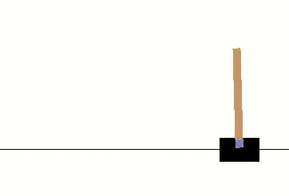
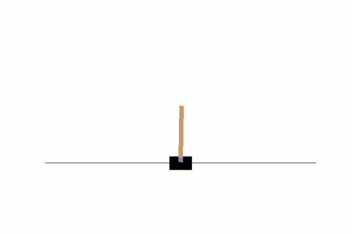
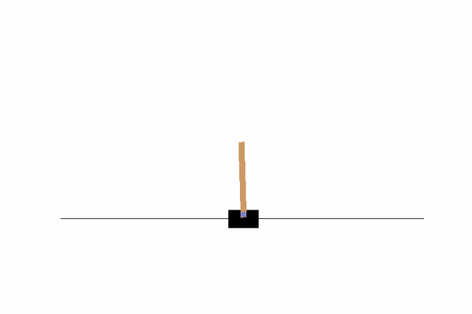
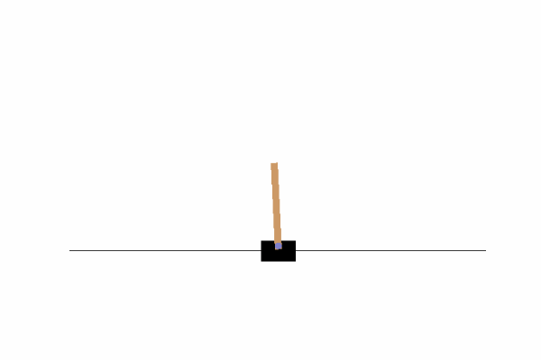

More intuition behind the iteration:
For infinite horizon, Bellman’s optimality condition implies that,
$$
J_{\alpha}(x)=\max_{a\in\mathcal{A}}\sum_{y\in\mathcal{X}}P_a(x, y)\left\{R_a(x,y)+\alpha J_{\alpha}(y)\right\}
$$
If we write the iterative step more explicitly, it turns out to be,
$$
J_{\alpha}^{(i+1)}(x):=\max_{a\in\mathcal{A}}\sum_{y\in\mathcal{X}}P_a(x, y)\left\{R_a(x,y)+\alpha J_{\alpha}^{(i)}(y)\right\}
$$
So if the iteration converges, we get a relation similar to Bellman’s equation.
Infinite horizon
Similarly if we want to find $J_{\alpha}^{\pi}$ for a given policy, we can do a similar iteration:
$$
J_{\alpha}^{\pi,(i+1)}:=T_{\pi}\circ J_{\alpha}^{\pi,(i)}
$$
The major questions are,
-
Do these procedures converge?
-
If yes, how fast?
Q: Does it converge?
Here is a theorem:
For any $\pi$ and $0<\alpha<1$, there is $J^{\pi}\in\mathbb{R}^{\mathcal{X}}$ such that,
For all $J\in\mathbb{R}^{\mathcal{X}}$,
$$
J^{\pi}=\lim_{k\rightarrow\infty}T_{\pi}^{k}J
$$
$J^{\pi}$ is the unique solution to
$$J=T_{\pi}\circ J
$$
Q: Does it converge?
The idea of the proof is as follows:
First we can
show that $T_{\pi}$ is a contraction, i.e., for any $J$ and $J'$,
$$
\lvert\lvert T_{\pi}J-T_{\pi}J'\rvert\rvert_{\infty}\leq\alpha\lvert\lvert J -J'\rvert\rvert_{\infty}
$$
For convergence, note that,
$$
\lvert\lvert T_{\pi}J-J^{\pi}\rvert\rvert_{\infty}\leq \alpha \lvert\lvert J-J^{\pi}\rvert\rvert_{\infty}\\ 0<\alpha<1
$$
Thus the policy iteration converges.
Q: Does it converge?
A similar theorem for optimal value function:
For any $\pi$ and $0<\alpha<1$, there is $J^{\star}\in\mathbb{R}^{\mathcal{X}}$ such that,
For all $J\in\mathbb{R}^{\mathcal{X}}$,
$$
J^{\star}=\lim_{k\rightarrow\infty}T^{k}J
$$
$J^{\pi}$ is the unique solution to
$$J=T\circ J
$$
$J^{\star}=\max_{\pi}J^{\pi}$
and
$J^{\star}=J^{\pi^{\star}}$
Policy Iteration
Similar as value iteration, but uses the following set of equations:
$$
J^{\star}(x)=\sum_{y\in\mathcal{X}}P_{\pi^{\star}(x)}(x,y)\left\{R_{\pi^{\star}(x)}(x,y)+\alpha J^{\star}(y)\right\}\\
\pi^{\star}(x)=\arg\max_{a\in\mathcal{A}}\sum_{y\in\mathcal{X}}P_{a}(x,y)\left\{R_{a}(x,y)+\alpha J^{\star}(y)\right\}
$$
Iteration is done as follows: Start with some $\pi^{(0)}, J^{(0)}$
$$
J^{(k+1)}(x):=\sum_{y\in\mathcal{X}}P_{\pi^{(i)}(x)}(x,y)\left\{R_{\pi^{(i)}(x)}(x,y)+\alpha J^{(k)}(y)\right\}
$$ until convergence. Call the limit $J^{\pi^{(i)}}$.
Then update the policy with,
$$
\pi^{(i+1)}(x):=\arg\max_{a\in\mathcal{A}}\sum_{y\in\mathcal{X}}P_{a}(x,y)\left\{R_{a}(x,y)+\alpha J^{\pi^{(i)}}(y)\right\}
$$ and go to the above step if the policy changes. Else stop.
Terminates after finite number of steps.
Policy Iteration
Instead of iterating over the value function, we can also iterate over the policy.
First note that,
$$
J^{\star}(x)=\sum_{y\in\mathcal{X}}P_{\pi^{\star}(x)}(x,y)\left\{R_{\pi^{\star}(x)}(x,y)+\alpha J^{\star}(y)\right\}\\
\pi^{\star}(x)=\arg\max_{a\in\mathcal{A}}\sum_{y\in\mathcal{X}}P_{a}(x,y)\left\{R_{a}(x,y)+\alpha J^{\star}(y)\right\}
$$
So we can define a Greedy operator $G:\mathbb{R}^{\mathcal{X}}\rightarrow\mathcal{A}^{\mathcal{X}}$ as:
$$
(GJ)(x)=\arg\max_{a\in\mathcal{A}}\mathbb{E}\left[R_0+\alpha J(X_1)\mid X_0=x, A_0=a\right]
$$
Policy Iteration
From the last set of equations, we can think of the following iteration:
$$
J^{(k+1)}(x):=\sum_{y\in\mathcal{X}}P_{\pi^{(i)}(x)}(x,y)\left\{R_{\pi^{(i)}(x)}(x,y)+\alpha J^{(k)}(y)\right\}
$$ until convergence. Call the limit $J^{\pi^{(i)}}$.
Then update the policy with,
$$
\pi^{(i+1)}(x):=\arg\max_{a\in\mathcal{A}}\sum_{y\in\mathcal{X}}P_{a}(x,y)\left\{R_{a}(x,y)+\alpha J^{\pi^{(i)}}(y)\right\}
$$
Policy Iteration
Equivalently,
-
Start with some policy $\pi^{(0)}$
-
Compute $J^{\pi^{(i)}}$ (policy evaluation iteration).
-
Update $\pi$ with the following:
$$
\pi^{(i+1)}=G\circ J^{\pi^{(i)}}
$$
-
If $\pi^{(i+1)}$ changes in the last step, go to step 2.
If $\pi^{(i+1)}$ does not change, then terminate.
Policy Iteration
Like the value iteration, the policy iteration also converges. One theorem says that it terminates in finite number of steps.
Policy iteration generates a sequence of policies with distinct, increasing values, terminating after a finite number of iteration with an optimal policy,
i.e., for some $k$,
$$
J^{\pi^{(0)}}\leq J^{\pi^{(1)}}\leq\ldots\leq J^{\pi^{(k)}}=J^{\star}
$$
Policy Iteration
There are some other variants of policy iteration. For example, in Generalized Policy iteration,
The value updation is done for a fixed number of times (i.e., approx. values):
$$
J^{(i+1)}:=T_{\pi^{i}}^{k}\circ J^{(i)}
$$ and then update the policy,
$$
\pi^{(i+1)}=G\circ J^{(i+1)}$$
Though value ierations look simpler, policy iterations are faster in practice, and terminates after finite steps.
Solution with Linear Programming
Another approach for finding the optimal policies is given by LPP:
Minimize $$\sum_{x\in\mathcal{X}}J(x) \text{ over }J$$
under the consraints,
$$J(x)\geq \sum_{y\in\mathcal{X}}R_a(x,y)P_a(x,y)+\alpha \sum_{z\in\mathcal{X}}P_a(x,z)J(z),\\ \forall a\in\mathcal{A}, x\in\mathcal{X}
$$
The solution will be same as $J^{\star}$.
...
Applications
Many applications. Some are:
-
Finance: deciding how much to invest in stock.
-
Robotics: Dialogue system, navigation system
-
Traditional problems like:
-
Which catalogues to send to individual clients?
-
At what age a vehicle needs to be repaires / replaced?
-
What proportion of fishes should be caught?
-
and many more...
Applications
The main challanges are:
-
Transition probabilities may not be known.
-
Rewards may not be defined explicitly.
-
For all modern problems, state space is huge. Difficult to handle.
-
Sometimes the states are not fully observed. Those are called Partially Observable MDP.
When the parameters are unknown, the decision maker tries to learn those from “experience”. That is called Reinforcement Learning.
Here we present two toy examples.
Cart-Pole problem
Classical problem of balancing a pole by applying force on a cart.
We have a system like this:

Want to balance the stick
Cart-Pole problem
Here are the values:
$$M=1kg, m=0.1kg, L=1m,\\ g=9.8ms^{-2}, \Delta t=0.02s$$
After each 0.02s, the decision maker decides to apply a force $F$ on the cart for the next 0.02s. Possible values of $F$ are $-10N, 0N, 10N$
Objectives are:
-
To keep the cart within boundary.
-
To keep the angle of the pole withinn a range ($-12^o$ to $12^o$)
-
To keep the system within these limits upto $200^{th}$ timepoint.
Cart-Pole problem
The dynamics of the system is described by the following:
Define
$$
p(t)=\frac{F+m\omega^2(t)L \sin(\theta(t))}{M+m}
$$
Then,
$$
\frac{d\omega(t)}{dt}=\frac{g\sin(\theta(t))-p(t)\cos(\theta(t))}{L\left(\frac{4}{3}-\frac{m\cos^2(\theta(t))}{M+m}\right)}\\
\frac{dv(t)}{dt}=p(t)-\frac{mL\frac{d\omega(t)}{dt}\cos(\theta(t))}{M+m}
$$
Cart-Pole problem
Given $x, v, \theta, \omega$ at time $t$, we can compute the state for time $t+\Delta t$. And apply the force accordingly.
Yes, the process is deterministic if the precise measurements are given.
But a little child can also balance a pole on his/her hand, without knowing the physics or the precise measurements.
Here we try to mimic the same behaviour. We shall provide only some discrete info about the state and see if we can find a good policy.
Drawback: Markov property may no longer be valid. But let’s see how it goes.
Cart-Pole problem
Some bad policies:
Choose the action randomly:

Mean life: 22.93
Cart-Pole problem
Some bad policies:
Based on position $x$ only:

Mean life: 29.33
Cart-Pole problem
Some bad policies:
Based on angle $\theta$ only:

Mean life: 41.40
Cart-Pole problem
Discrete representation of the states:
-
The whole range of $x$ was divided into three regions: Left-Forbidden, Good, Right-Forbidden
-
Each of $v, \theta, \omega$ was also categorized into 5 regions.
-
So, $\#$ of states$=3\times 5^3=375$
-
At each time point, the continuous observations are collected from the simulator. Then a small amount of random noise is added, and then the observation is categorized.
-
Based on the supplied category, the program has to take a decision which will be sent to the simulator.
Cart-Pole problem
The transition probabilities under each action were estimated beforehand using simulation.
The reward is defined as follows:
$$
R_a(x,y)=
\begin{cases}
-10, & \text{if }y\text{ is a forbidden state}\\
2, & \text{if }y\text{ is a `very good' state}\\
0, & \text{otherwise}
\end{cases}
$$
Cart-Pole problem
Mean life: 195.80
Cart-Pole problem
The result is as follows:
For 100 simulations upto time 200, the following was obtained:
|
Mean Life |
Min. |
Max. |
#(==200) |
|
Random policy
|
22.93
|
9
|
66
|
0
|
|
x-based if-else
|
29.33
|
8
|
56
|
0
|
|
$\theta$-based if-else
|
41.40
|
25
|
59
|
0
|
|
MDP
|
195.8
|
170
|
200
|
61
|
Toy example : 2048
Why $2\times 2$?
-
For $4\times 4$, it is possibe to go to 2048 (possibly more than that), and there are trillions of states.
-
If we consider the $4\times 4$ game upto 64, that has about 40 billion states.
-
For $3\times 3$, it is possible to go upto 1024 and there are about 25 million states.
-
For $2\times 2$, it is possible to reach 32, and there are at most $6^4=1296$ states.
Toy example : 2048
-
After each move, the game randomly chooses a blank tile.
-
In that position, a 4 is placed with probability 0.1, a 2 is placed with probability 0.9
-
If there is no blank space, the game is over.
So we can explicitly calculate the transition probabilities.
Toy example : 2048
Transition probabilities
Toy example : 2048
Reward is defined as follows:
$$R_a(x,y)=
\begin{cases}
+5, & \text{if }y\text{ contains 32}\\
-5, & \text{if move }a\text{ is invalid for state }x\\
0, & \text{otherwise}
\end{cases}
$$
Toy example : 2048
Here is the result:
From 200 simulations, the highest tiles were as following:
Conclusion:
-
The iterative procedures perform pretty well for a simple problem.
-
For real world problems, the probabilities and rewards will be unknown. Those have to be learned by the agent from experience.
-
The main challange is to solve a problem with huge number of states.
-
References:
-
Reinforcement Learning: An Introduction, Richard S. Sutton and Andrew G. Barto
-
Lecture Notes available online
-
Presented by:
Tamoghna Gupta
M.Stat. 1st Year
ISI Kolkata